It stops and asks, with pictures
Before Claude quietly picks your data model, method or layout, Crux lays out the options with sketches, pros and cons, and a recommendation. Nothing is built until you pick.
A decision skill and an agent hub for Claude Code
Claude does the work around the decision. You make the call.
Crux stops Claude at the handful of choices that matter, shows you the options as pictures, and keeps a record every later session reads. Crux Hub is a chat app on your own computer for directing several Claude agents at once, from your desk or your phone.
Free and open source. Runs on your own machine.
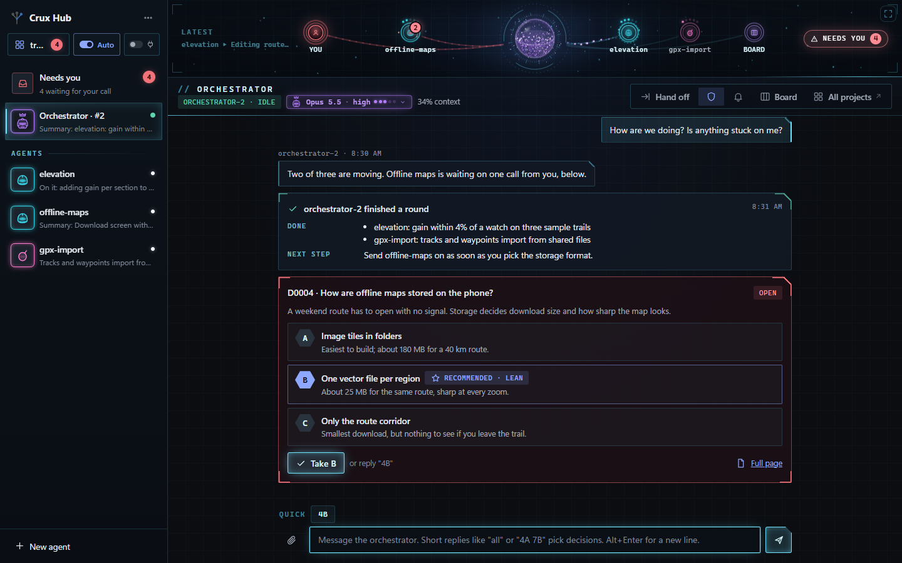
The problem
Ask an AI coding tool for a feature and it makes dozens of choices on the way: how the data is shaped, which method to use, where things are stored, what the screen looks like. Most are fine. A few are hard to undo, and you only find out weeks later.
Who it's for
Engineers, designers, researchers and solo builders. You don't have to be a programmer: Crux explains each choice in plain words and pictures, and you answer with a letter.
What's different
Before Claude quietly picks your data model, method or layout, Crux lays out the options with sketches, pros and cons, and a recommendation. Nothing is built until you pick.
Each pick is saved as a short record in your project. Every later session reads it before planning, so a settled question stays settled.
The Hub gives you one chat with an orchestrator and its workers, and gathers everything waiting on you into a single list. It works on your phone too.
Part 1 Crux, the decision skill
How a decision travels
Type /crux before a piece of work, or let it step in on its own when Claude is about to make a big choice for you: a new dependency, a change to how data is shaped, a change that reaches across several parts. It finds the few decisions hiding in the task and brings them to you.
You answer with a letter. Claude then does the work, and the choice is written down where the next session will find it.
Two or three options right in the chat, with a recommendation. You reply with a letter and the work carries on.
/crux quick kilometres or miles?
ClaudeA Kilometres everywhere. B Store metres, show either (recommended: nothing is converted twice). C Follow the phone's region.
YouB
ClaudeRecorded as decision 2. Building it now.
Three to five ranked decisions, each on its own page: a sketch per option, specific pros and cons, scored criteria, and a recommendation that says how sure it is.
On the page you can pick, park or drop a decision, then paste one line back to Claude. Every page opens offline in any browser.
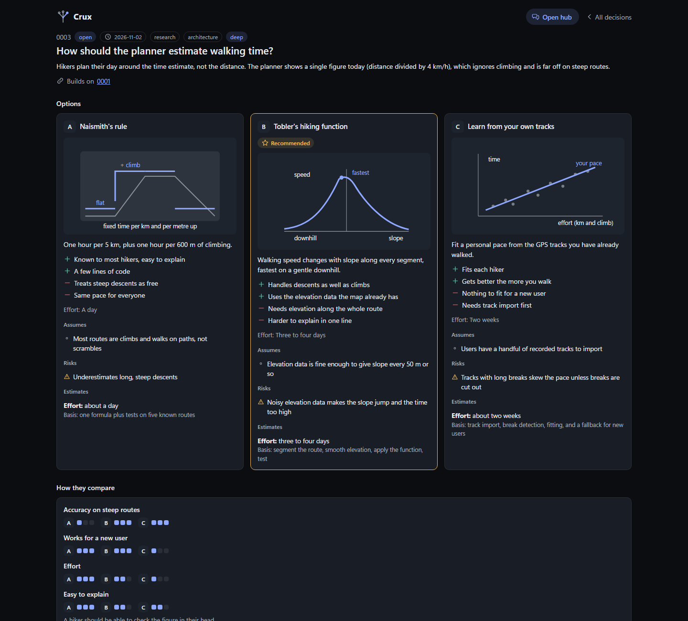
Deep mode and the build brief
Add deep and Crux researches each option in parallel, on the web and in your code. Each option comes back with sources, the assumptions it rests on, its risks, and an estimate with its basis.
Claims without a source are labelled as Claude's judgment, so you can tell a finding from a guess.
After you pick, it writes a build brief: what was chosen, what was ruled out, and what the session that builds it needs to know.
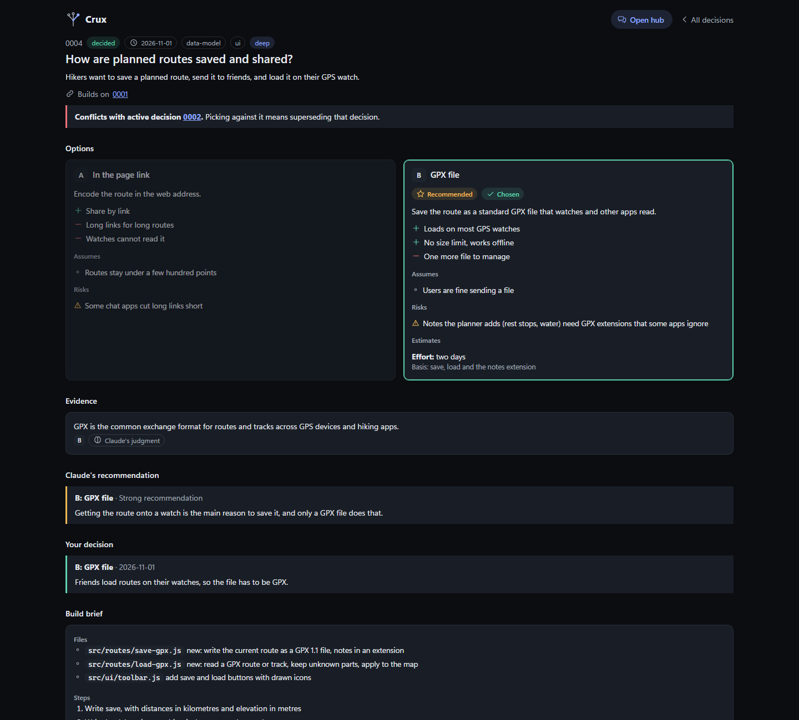
Crux Dig
Most projects were built before anyone wrote the decisions down. Type /crux-dig and Crux reads the code and drafts the choices it finds, for you to confirm, edit or reject. It writes only to the decisions folder and never touches your code.
Each finding gets two separate reads.
A choice someone made on purpose, or something that just happened along the way.
Still serving the project, or now strained. Strained findings are the candidates for your next real decisions.
The board and all projects
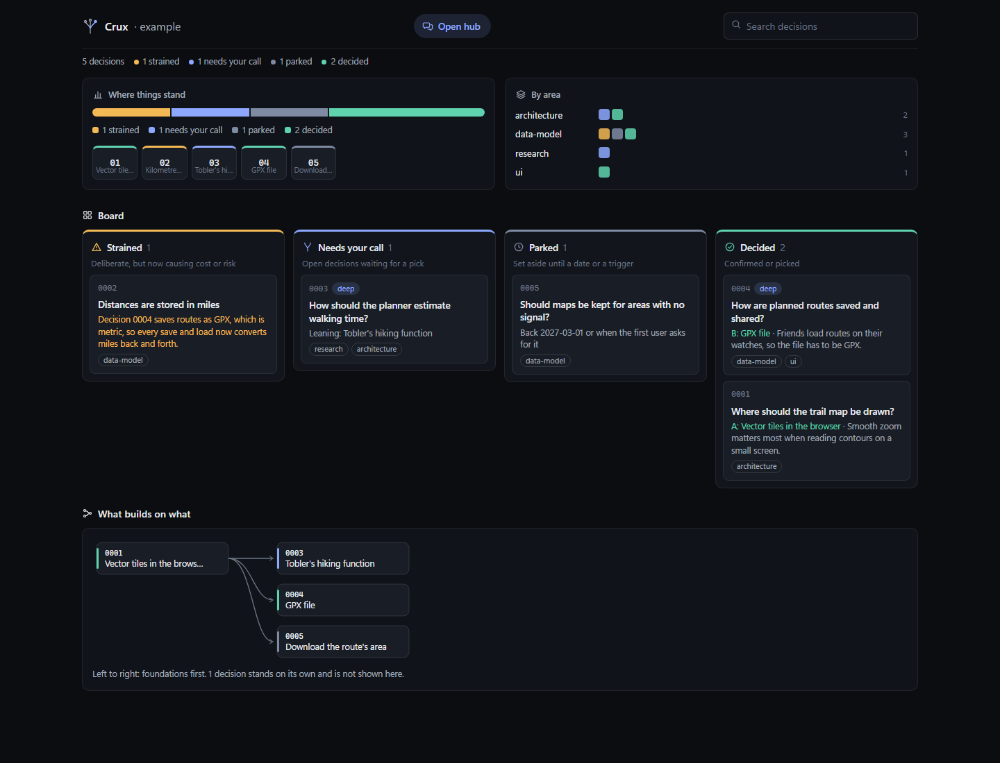
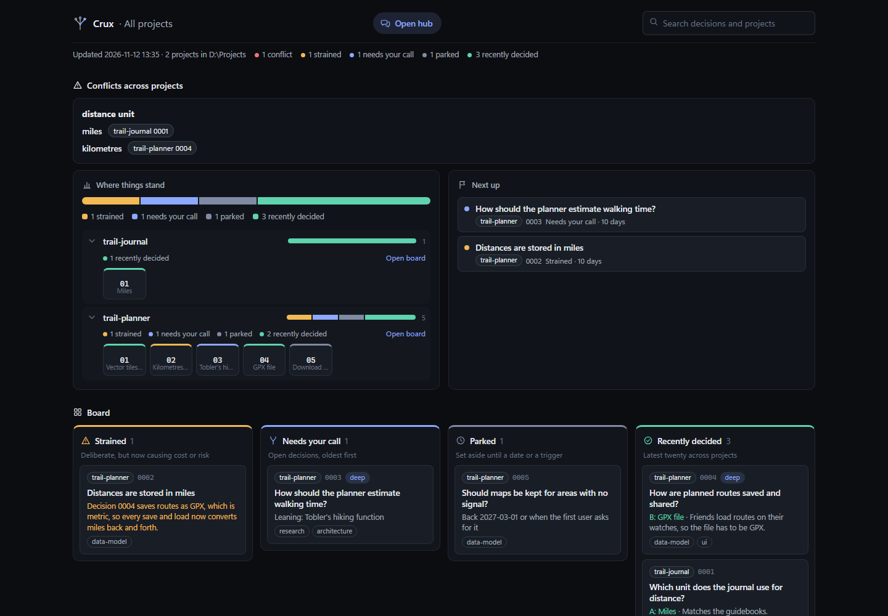
Lanes for strained, needs your call, parked and decided, plus a map of which decisions build on which. It is a plain page that opens offline.
The five things most worth your attention across all projects, what has waited longest, and conflicts between projects at the top.
A decision can be parked until a date, dropped, or replaced by a newer one. It stays as history, so the reason things are the way they are is never lost.
/crux quick kilometres or miles?/crux full plan offline maps/crux deep plan offline maps/crux challenge 3/crux park 7 until 2027-01-15/crux-digPart 2 Crux Hub, the agent chat app
Crux Hub
The Hub is a small messaging-style app that runs on your own computer and opens in a browser tab. Agents work in your project folder like ordinary Claude Code sessions.
You talk to the orchestrator. It splits the job between workers, answers their routine questions, and brings you only what needs your judgement. You can open any worker's thread and talk to it directly.
When an agent finishes a round it posts a short summary: what it did, what changed, what it needs from you.
Needs you
Decisions, permission requests and agents' questions all collect in one place called Needs you. Nothing waits unseen in a thread you forgot to open.
all, all but 4A, 4A 7B, or just B.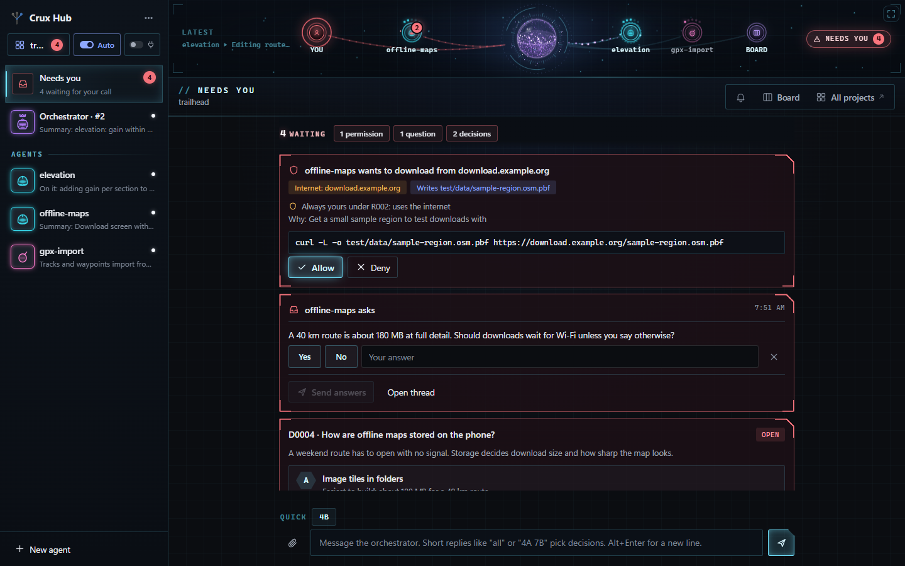
Who may do what
In Auto mode, work that stays inside the project folder or a temp folder goes ahead. Reading and searching never need a yes.
Unclear requests go to the orchestrator, which answers within rules you set. Every answer is logged as one line you can check. No answer in two minutes, and it comes to you.
Each project is in one of two modes, switched with the Ask/Auto switch beside the project's name. Ask is the default: anything beyond reading goes to the orchestrator first. Auto lets contained work run.
Mail, calendar and drive connectors are off in every project unless you switch them on, and sending, sharing or deleting through them always comes to you.
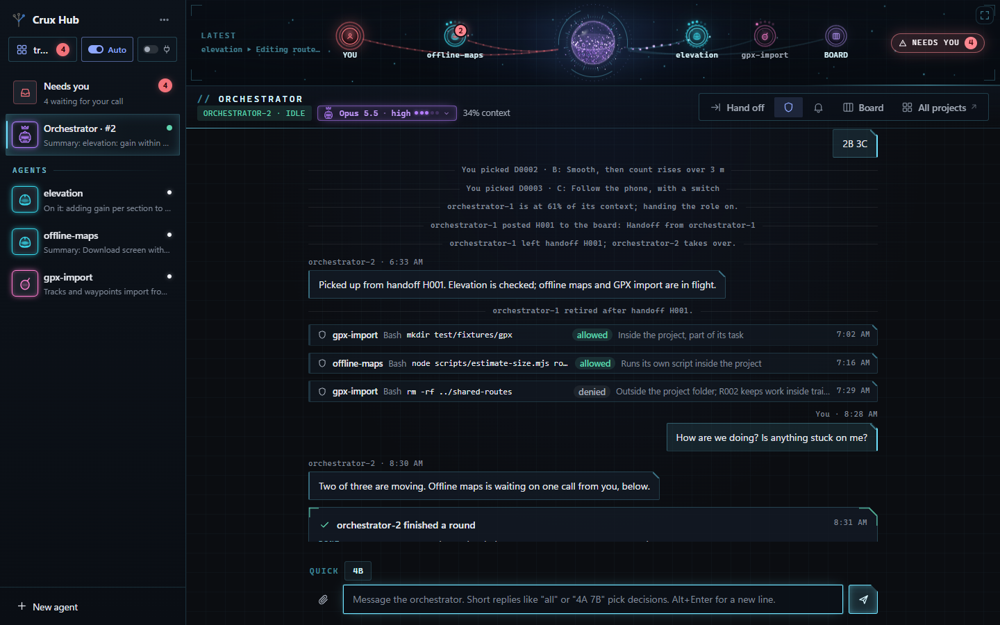
The live map
A strip along the top shows the orchestrator as a glass sphere and each worker as a station. Click it and it opens to fill the screen.
The sphere at the top of this page is the same drawing code, running live.
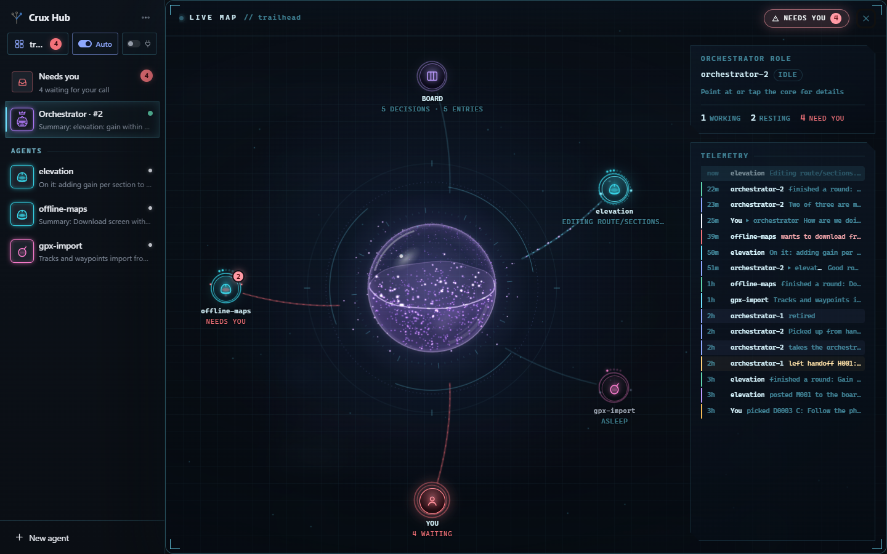
Memory that outlives agents
An agent's own memory fills up, and a chat ends. So the Hub keeps what matters outside any one agent, in three layers. A new agent reads a one-line index of each and opens the details only when it needs them.
Agents also record lessons as they go. A lesson about one project is filed with that project; a lesson about you waits in Needs you for your yes.
The orchestrator is a role, not one long chat. When its memory is 60% full, when you say so, or after an hour of quiet, it hands the role to a fresh agent.
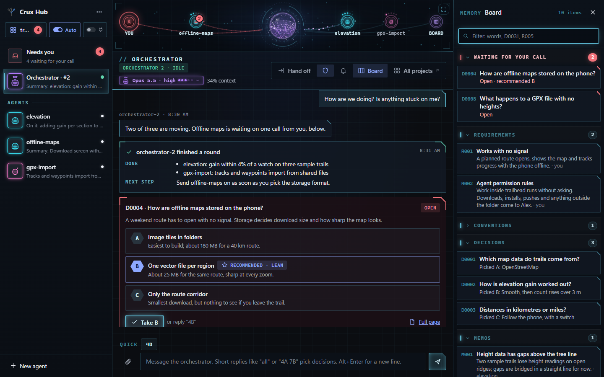
On your phone
The Hub only listens on your own PC. Your phone reaches it through Tailscale, a private network made of just your own signed-in devices. Nothing is published on the internet.
Add the Hub to your home screen and it opens on Needs you whenever something waits. Notifications tell you only what kind of card is waiting and its number; the details load over your private network when you tap.
The right agent for the job
A quick fix doesn't need the biggest model. Each agent has a type, a model and an effort level; the orchestrator picks them for its workers, or follows yours ("put a reviewer on it"). Change any of them from the chip in a thread's header.
Agent types are ordinary Claude Code agent files, so the same types work in plain Claude Code.
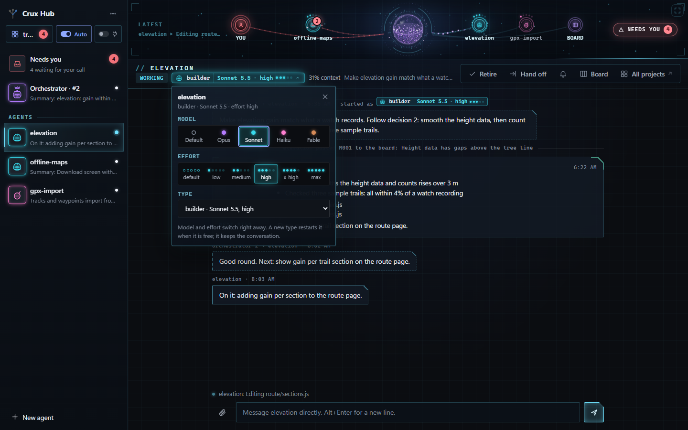
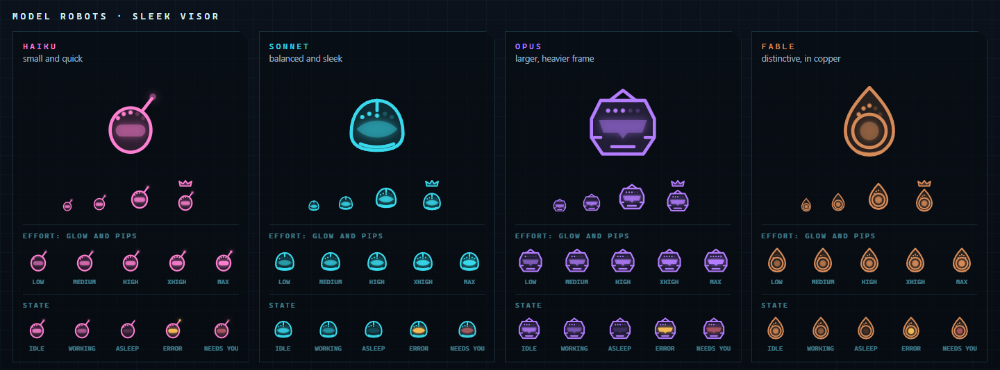
Usage
The usage panel shows estimated spend today and since the Hub started, split by model and by agent. It is an estimate from list prices, not a bill; your Anthropic Console has the real figures.
Each agent uses tokens on its own. Lighter models and lower effort for routine work keep the total down, which is what agent types are for.
Decisions land as a pull request
When you pick in the Hub, the record is not dropped into the middle of your working files. It goes onto a side branch, and the Hub keeps one pull request open for all of them. This needs the project to be a git repository; with the GitHub command-line tool signed in, the pull request is opened for you.
Part 3 Set up
Set up the skill
The skill works on its own; you don't need the Hub to use it.
The install guide has the exact commands for Windows, Mac and Linux, and how to update.
Clone the repository, or download it from GitHub.
git clone https://github.com/mshomper/crux.gitLink or copy crux and crux-dig into your Claude Code skills folder. Both are needed.
~/.claude/skills/Start a new Claude Code session in any project and type:
/crux quick kilometres or miles?The first time, say yes when Claude offers to add one line to the project's CLAUDE.md, so later sessions read the records.
Set up the Hub
The Hub runs its agents with your own Anthropic API key, from the Anthropic Console. Anthropic bills the tokens they use to that key.
Without the second setting in step 2, the Hub falls back to whatever Claude Code sign-in is already on the PC. That is for your own personal use only; the Hub neither offers nor manages it.
The Hub guide covers every setting, restarting, and desktop shortcuts on Windows.
In the Crux folder you cloned for the skill:
cd crux/hub
npm installIn PowerShell on Windows:
$env:ANTHROPIC_API_KEY = "sk-ant-..."
$env:CRUX_HUB_USE_API_KEY = "1"On Mac or Linux (untested):
export ANTHROPIC_API_KEY=sk-ant-...
export CRUX_HUB_USE_API_KEY=1Give it one or more project folders. Each should be a git repository.
npm start -- C:/path/to/your/projectIn your browser, then say hello to the orchestrator.
http://localhost:4747Before you start, check your PC's name (type hostname in a terminal). Turning on secure addresses writes that name into public certificate records, so it should not say anything private. Rename the PC first if it does.
On the PC and on the phone, from tailscale.com or your app store.
Use the same personal account on both devices.
In the Tailscale admin console, under DNS: make sure MagicDNS is on, then Enable HTTPS.
With the Hub running, in a terminal on the PC. It prints the address. Use serve, never funnel: funnel publishes to the whole internet.
tailscale serve --bg 4747Then add it to the home screen: Share, then Add to Home Screen on iPhone; menu, then Install app on Android.
Open Crux from the home-screen icon, go back to the list of agents, and tap the bell. A test notification arrives.
profile-template folder to ~/crux/profile/ and write down how you like work done. Every agent reads the short core. Keep that folder private and out of any public repository.~/.claude/agents/ for every project, or in a project's own .claude/agents/ folder. Each can set a model, an effort level and standing instructions..crux-hub.json file containing { "permissions": "auto" }.npm start --, or in ~/crux/hub.json, and switch between them in the Hub.Honest limits